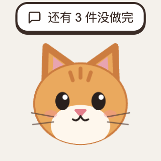
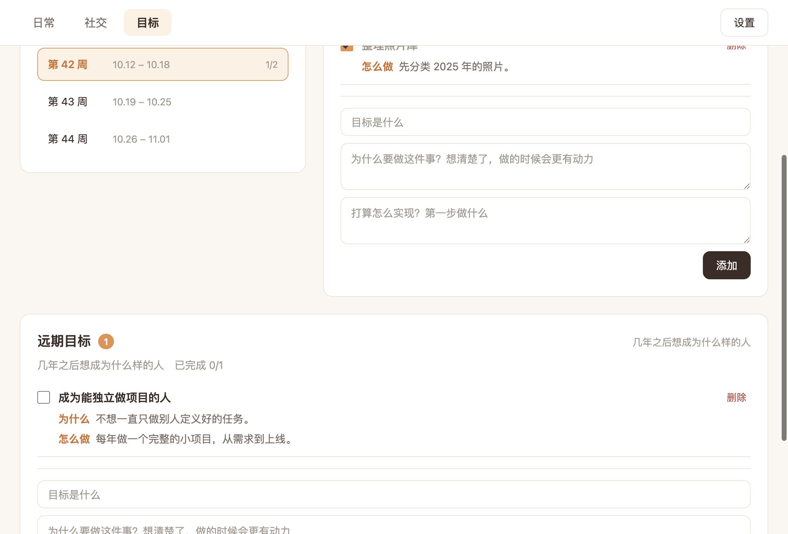
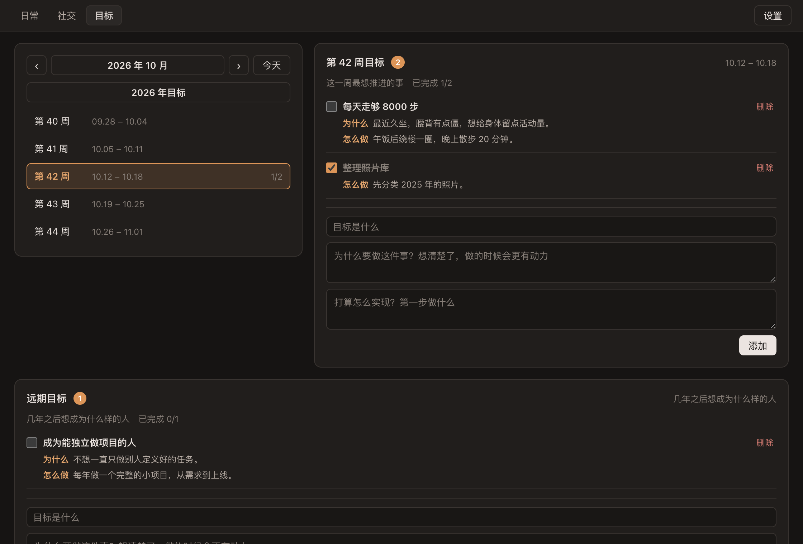

一只陪你自律的桌面橘猫
它常驻在桌面角落，到了你设定的时间，会提醒你今天还有哪些事没做完。日常、日记、人际关系和目标，都在一个地方管理。
它能帮你做什么
五个模块，各管一件事。猫负责在你需要的时候出现。
桌宠
常驻桌面的提醒
猫会眯眼跳动，点击打开面板。每天到了提醒时间，它会告诉你还剩几件待办没做完。
日常
待办与日记
按天记录待办，没完成的自动顺延到第二天。日记支持 Markdown，输入即渲染。
日记同步
一键同步到飞书
可以把当天的日记同步到你自己的飞书云文档，每天只同步一次，同步前会确认已写完。
社交
保持联系的节奏
记下认识的人，按 3、7、15、30 天的节奏提醒你联络。之后每 30 天一次，不会忘了老朋友。
目标
周、月、年与远期
每个目标都可以写下「为什么」和「怎么做」。日历可以快速切换到任意年份和月份。
隐私
数据只在本地
没有账号，没有云端服务，没有统计代码。数据保存在你自己的电脑上，你可以随时备份。
界面预览
浅色与深色主题都支持，设置里可以选择跟随系统。


安装指南
安装包目前没有购买开发者证书签名，所以系统首次打开时会拦截一下。这是正常的，按下面的步骤放行即可。
macOS
- 下载对应芯片的 dmg 文件，双击打开。
- 把「自律猫」拖到「应用程序」文件夹。
- 第一次打开时，在「应用程序」里右键「自律猫」，选择「打开」。
- 如果仍然被拦截：打开「系统设置 → 隐私与安全性」，在底部点击「仍要打开」。
Windows
- 下载
zilu-cat-setup-x64.exe，双击运行。 - 如果弹出「Windows 已保护你的电脑」，点击「更多信息」。
- 点击「仍要运行」，然后按提示完成安装。
- 安装完成后，桌面右下角会出现小猫。
不知道自己的 Mac 是哪种芯片？点击屏幕左上角的苹果菜单 →「关于本机」。芯片显示 Apple 的选择「Apple 芯片」版本，显示 Intel 的选择「Intel 芯片」版本。